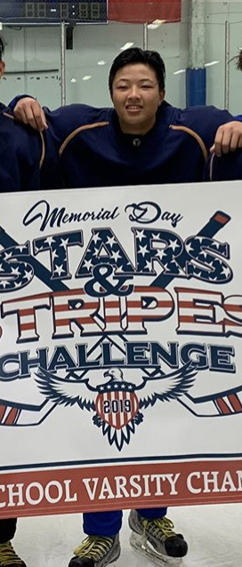

On this website you can view my featured websites, and read about my qualifications and about me.

This is a picture of me after a hockey tournament
My Skills
My name is Michael Chua, and I am currently a freshman at Westview High School. I am proficient in HTML and CSS as well as a small amount of JavaScript. I am also able to smoothly speak Spanish. I enjoy creating websites because it allows me to unleash my creative side. In my free time, I enjoy playing sports and hanging out with friends. I also indulge in sleeping and playing with my dog. I also participate in other extracurricular activites such as hockey and lacrosse.
This was my very first website. It was made in January 2019 with a total amount of 80 minutes of work for a submission in my Web Design Class.